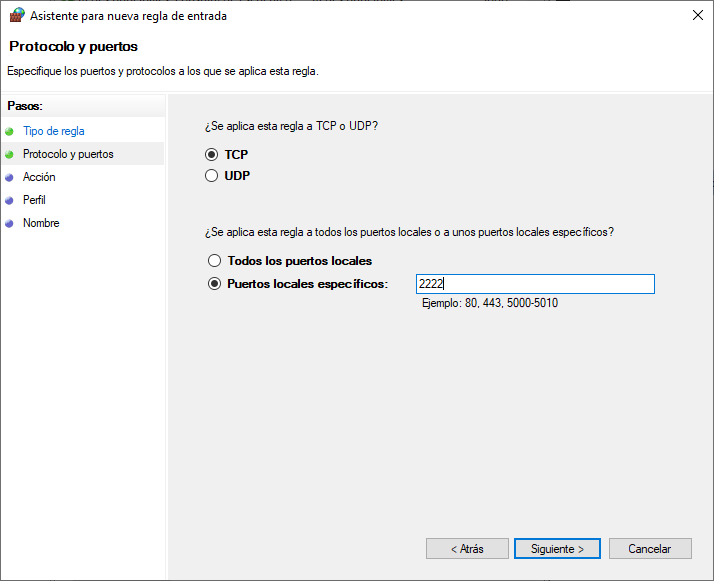

Enabling SSH into WSL¶
Table of Contents
Instalación y configuración de OpenSSH server¶
- Instalar
openssh-serveren la distro de WSL:
$ sudo apt-get install openssh-server
Reading package lists... Done
Building dependency tree
Reading state information... Done
openssh-server is already the newest version (1:7.6p1-4ubuntu0.3).
0 upgraded, 0 newly installed, 0 to remove and 0 not upgraded.
Nota
Para la distro de WSL Ubuntu 18.04, ya se encontrará instalado el servidor SSH por defecto
- En el WSL bash shell, reinstalar (reconfigurar) OpenSSH con:
$ sudo dpkg-reconfigure openssh-server
Creating SSH2 RSA key; this may take some time ...
2048 SHA256:a1Wm2wlyu+xMvJpFADe8oqlSJCUfT96/8qXPYcWGe8U root@DESKTOP-PTFJ9SQ (RSA)
Creating SSH2 ECDSA key; this may take some time ...
256 SHA256:YYqT6dvLFpUA21BduvnqXM7i5RdSurvdkafD2lw7glw root@DESKTOP-PTFJ9SQ (ECDSA)
Creating SSH2 ED25519 key; this may take some time ...
256 SHA256:q084sqn9frKtN9ZcwQw02/mGmYzn7XNQsFoKzdQ4GDo root@DESKTOP-PTFJ9SQ (ED25519)
invoke-rc.d: could not determine current runlevel
- Editar el archivo
/etc/ssh/sshd_configy agregar las 2 líneas siguientes:
$ sudo vim /etc/ssh/sshd_config
PasswordAuthentication yes
Port 2222
Nota
La razón del cambio de puerto por defecto para SSH (22) es debido a que puede estar en uso por Windows.
Crear una regla en el firewall de Windows¶
- Abrir el puerto
2222en el firewall de Windows:
- En el barra de navegación de Windows, abrir el programa WF.msc Seleccionar la opción Reglas de entrada en la barra izquierda:

Abrir el programa WF.msc de Windows, Reglas de entrada
- Seleccionar la opción Nueva regla… en la barra derecha:
Seleccionar la opción Nueva regla…
- Seleccionar el tipo de regla Puerto:
Tipo de regla: Puerto
- Aplicar la regla a TCP y usar la opción Puertos locales específicos: y escribir 2222:

Aplicar la regla a TCP, Puertos locales específicos: 2222
- Elegir la opción Permitir la conexión:

Seleccionar Permitir la conexión
- Aplicar la regla sobre todas las opciones: Dominio, Privado, Público

Seleccionar Permitir la conexión
- Dar un nombre y descripción a la nueva regla de firewall creada:

Nombre y descripción de la regla de firewall
Reiniciar el servicio SSH¶
- En el WSL bash shell, reiniciar el SSH server
$ sudo service ssh --full-restart
- Comprobar que Windows se encuentra escuchando en el puerto
2222. Desde el Powershell ejecutar:
$ netstat -aon | findstr "2222"
Conexión remota por SSH¶
- Desde un equipo remoto conectarnos por SSH al WSL de Windows usando un terminal o PuTTY, apuntando a la IP del sistema Windows y el puerto
2222. Por ejemplo para conectarnos por SSH desde un terminal de Linux usamos:
$ ssh mogago@192.168.1.8 -p 2222